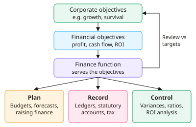

A-level Business Year 12 · Topic 7
Financial planning and sources of finance
This topic covers financial planning, how a business sets financial targets and raises the money it needs.
We look at sources of finance, business plans, sales forecasting, costs and revenue, economies of scale and break-even.
Finally we see how budgets and variance analysis help managers stay in control.
- 8 subtopics
- 380 questions
- Free: 7.1 notes and 10 questions
In this topic
- 7.1Financial objectives and the role of the finance functionFree below · 36 questions
- 7.2Sources of finance: internal and external, short-term and long-term, and choosing between themOpen in Full Marks · 79 questions
- 7.3Business plans and raising start-up financeOpen in Full Marks · 25 questions
- 7.4Sales forecasting: trends, moving averages and limitationsOpen in Full Marks · 63 questions
- 7.5Costs, revenue and profit: fixed, variable, direct, indirect, total and average costsOpen in Full Marks · 37 questions
- 7.6Economies and diseconomies of scaleOpen in Full Marks · 25 questions
- 7.7Break-even analysis: calculations, margin of safety, charts and limitationsOpen in Full Marks · 53 questions
- 7.8Budgets: purposes, setting budgets and variance analysisOpen in Full Marks · 62 questions
7.1 · Free notes
Financial objectives and the role of the finance function

Key points
- Corporate objectives are the overall goals of the whole business (e.g. growth, survival, profit). Each function, including finance, sets financial objectives that help achieve them, ideally SMART ones.
- Profit maximisation means aiming for the highest gap between revenue and costs. Profit = total revenue − total costs, and revenue = price × quantity sold. It can encourage short-termism and ignore other stakeholders.
- Profit satisficing means aiming for a satisfactory level of profit while balancing other aims such as staff welfare or reputation. It is common where managers run the firm on behalf of shareholders (the separation of ownership and control).
- Cash flow objectives aim to have enough cash to pay bills when due. A profitable business can still fail through liquidity problems, e.g. overtrading, so cash flow is vital for survival.
- Return on investment (ROI) = (net gain from investment ÷ cost of investment) × 100. Managers compare it with the cost of borrowing and with alternative projects. ROCE = operating profit ÷ capital employed × 100.
- Other financial objectives include sales revenue or growth, market share (firm's sales ÷ total market sales × 100), cost minimisation and shareholder returns (dividends and share price).
- Objectives vary with size, ownership and life cycle. Start-ups focus on survival and cash flow, plcs on shareholder value and growth, and not-for-profit organisations on covering costs (break-even).
- The finance function records transactions, prepares financial statements and statutory accounts, sets budgets and forecasts, manages cash, analyses performance, advises on investment and raises finance.
- Limited companies must file annual accounts with Companies House. All businesses must account for tax (corporation tax, VAT, PAYE) to HMRC.
- Distinguish capital expenditure (buying long-term assets such as machinery) from revenue expenditure (day-to-day running costs such as wages). The finance function monitors both against budget.
- Financial objectives are limited by internal factors (resources, other objectives) and external factors (interest rates, competitors, the economy). The finance function compares actual results with targets, so objectives can be reviewed.
In more detail
- Worked ROI: a £40,000 investment in new software brings net gains of £10,000 → ROI = 10,000 ÷ 40,000 × 100 = 25%.
- Capital vs revenue spending: buying a delivery van is capital expenditure (it lasts for years), while paying for its fuel and insurance is revenue expenditure.
- Capital structure target: a firm may aim to keep gearing below 40%, limiting how much of its long-term finance comes from loans.
- Objectives by stage: a tech start-up may target cash runway (the months of cash it has left), while a mature plc targets steady dividend growth.
Practice
Financial objectives and the role of the finance function: 10 questions
Pick an answer to check it, or open the answer for the explanation.
1. A firm has sales revenue of £480,000 and total costs of £420,000. What is its profit?
- £12.5%
- £6,000
- £60,000
- £900,000
Show answer
C: £60,000. Profit = total revenue − total costs = £480,000 − £420,000 = £60,000. Adding the figures or giving a percentage misreads the formula.
2. A project costing £200,000 produces a net gain of £30,000. What is the return on investment (ROI)?
- 30%
- 6.7%
- 15%
- 85%
Show answer
C: 15%. ROI = net gain ÷ cost of investment × 100 = 30,000 ÷ 200,000 × 100 = 15%. 6.7% inverts the fraction.
3. A manager aims for acceptable profit while also keeping staff morale high. This is best described as:
- Cost minimisation
- Profit satisficing
- Market penetration
- Profit maximisation
Show answer
B: Profit satisficing. Profit satisficing means settling for a satisfactory profit while balancing other aims. Profit maximisation aims for the highest possible profit.
4. Why might a profitable new business still fail?
- It runs out of cash to pay bills when due
- Profit is always spent on dividends
- Revenue is not recorded
- Profit and cash flow are the same thing
Show answer
A: It runs out of cash to pay bills when due. Profit is not cash. Customers may pay late while suppliers and wages must be paid, so liquidity problems (poor cash flow) can force closure.
5. Which of the following is a financial objective?
- Raise ROCE from 8% to 12%
- Cut staff turnover to 10%
- Reduce customer complaints by 20%
- Achieve a quality award
Show answer
A: Raise ROCE from 8% to 12%. Raising ROCE is expressed in financial terms. The others are HR, marketing or operations objectives.
6. Which of these is an example of capital expenditure?
- Paying the electricity bill
- Buying stationery
- Paying monthly wages
- Buying a delivery van
Show answer
D: Buying a delivery van. Capital expenditure buys long-term assets such as vehicles. Wages, energy and stationery are day-to-day revenue expenditure.
7. Which task is part of the finance function?
- Designing the packaging
- Recruiting new staff
- Carrying out consumer surveys
- Preparing statutory accounts to file at Companies House
Show answer
D: Preparing statutory accounts to file at Companies House. Producing financial statements and filing statutory accounts is a core finance role. The others belong to marketing, HR and operations.
8. Which financial objective is most likely to be a priority for a new start-up in its first year?
- Increasing share price
- Maximising dividends
- Survival through positive cash flow
- Dominating market share
Show answer
C: Survival through positive cash flow. New firms have little cash and no track record, so managing cash to survive comes first. Dividends and share price matter more for established plcs.
9. A firm has sales of £6 million in a market worth £40 million. What is its market share?
- 15%
- 6.7%
- 34%
- 0.15%
Show answer
A: 15%. Market share = firm's sales ÷ total market sales × 100 = 6 ÷ 40 × 100 = 15%. 6.7% inverts the fraction.
10. Which is a limitation of profit maximisation as an objective?
- It may encourage short-termism and ignore stakeholders
- It never benefits shareholders
- It lowers revenue
- It is impossible to measure
Show answer
A: It may encourage short-termism and ignore stakeholders. Chasing the highest profit may mean cutting quality, wages or investment, harming reputation and long-term success.
Keep going in Full Marks
Full Marks has 36 questions on Financial objectives and the role of the finance function (26 more than here), set out in practice levels. You also get notes and 3D models for all 8 subtopics of Financial planning and sources of finance, plus games, timed exams and past papers.
On your exam board
- AQATopic 4: Decision making to improve operational performance, Topic 5: Decision making to improve financial performance
- OCRTopic 3: Operations management, Topic 5: Accounting and finance
- EdexcelTopic 2.1: Raising finance, Topic 2.2: Financial planning, Topic 2.4: Resource management
- CambridgeTopic 5: Finance and accounting